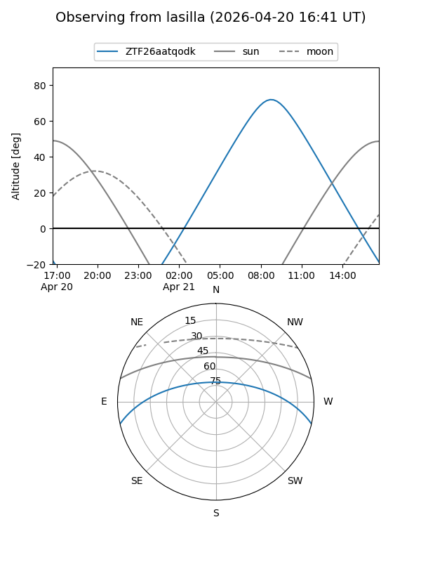
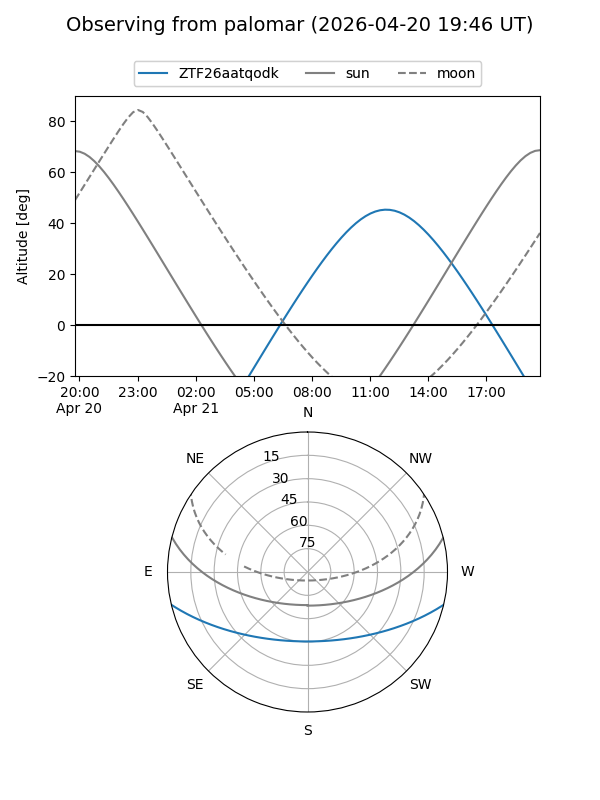

ZTF26aatqodk
Target ZTF26aatqodk at 2026-04-20 14:11
Aliases and brokers:
FINK: link
Lasair: link
ALeRCE: link
alt names
ZTF26aatqodk (ztf,fink_ztf)
Coordinates:
equatorial (ra, dec) = 269.9246,-11.29037
equatorial (HMS+DMS) = 17:59:41.90,-11:17:25.34
galactic (l, b) = (16.9166,+6.08996)
Flags:
Photometry:
last ztfg=20.02
1 ztfg detections
Lightcurve
Visibility


Additional plots